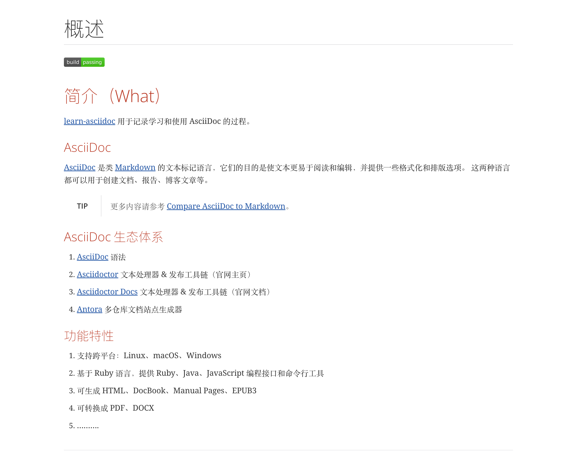
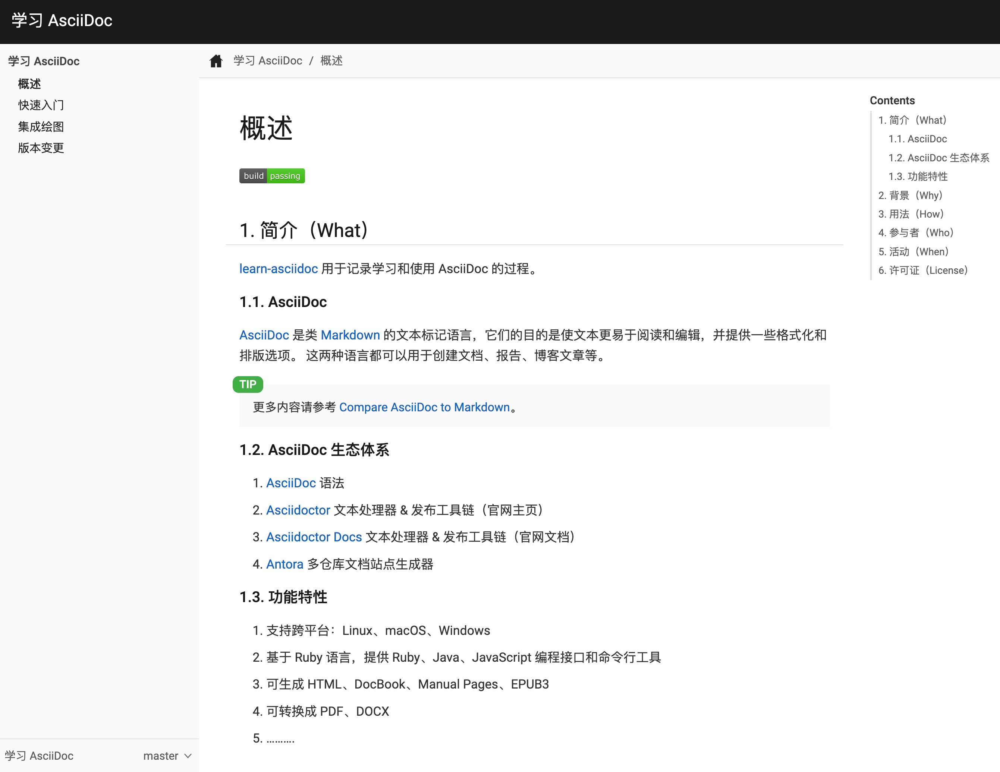
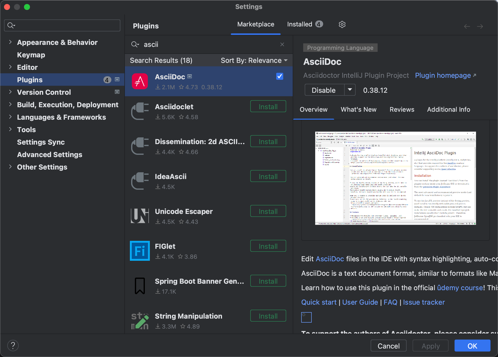
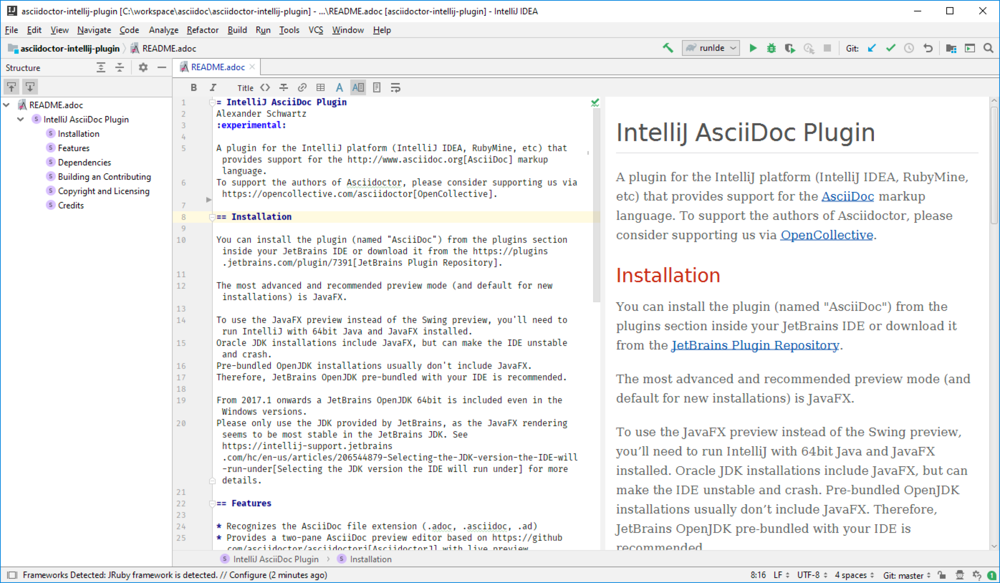

快速入门
以下介绍实操环境基于 macOS 13.3。
1. 安装
macOS
#安装 Asciidoctor
brew install asciidoctor| 更多内容请参考 Asciidoctor Installation。 |
2. 生成 HTML
生成单个 HTML 页面，然后在浏览器预览。
#获取当前 index.adoc
wget https://raw.githubusercontent.com/peacetrue/learn-asciidoc/master/docs/antora/modules/ROOT/pages/index.adoc
#生成 index.html
asciidoctor index.adoc
#使用 Chrome 打开 index.html
open -a 'Google Chrome' index.htmlHTML 页面预览效果如下：

3. 生成 Antora 站点
使用 Antora 生成静态站点，然后在浏览器预览。
#使用 npm 安装 Antora
npm i -g @antora/cli@3.0 @antora/site-generator@3.0
#检出当前仓库作为静态站点的样章
git clone https://github.com/peacetrue/learn-asciidoc
# 进入仓库中 Antora 文档目录
cd learn-asciidoc/docs/antora
#使用 Antora 生成站点
antora generate playbook-plain.yml
#使用 Chrome 打开站点
open -a 'Google Chrome' build/site/index.html静态站点预览效果如下：

| 更多内容请参考 Asciidoctor Extensions。 |
4. 集成 IntelliJ IDEA
以下介绍基于 IntelliJ IDEA 2023.1 (Ultimate Edition)。
安装 AsciiDoc 插件：

插件预览效果如下：

| 更多内容请参考 IntelliJ AsciiDoc Plugin。 |